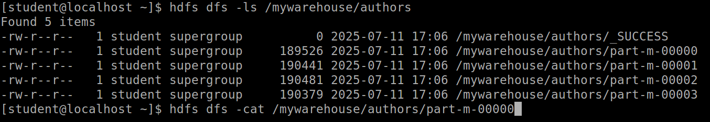

Lab 3.2: Data Ingestion with Sqoop for RDBMS (MariaDB)¶
Objective¶
The goal of this lab is to understand how to ingest data from relational databases into Hadoop Distributed File System (HDFS) using Sqoop. We performed various Sqoop operations such as importing entire tables, selective columns, filtering rows, using different file formats, and exporting data back to RDBMS.
1. Exploring the Database (MariaDB)¶
We began by accessing the MariaDB database and inspecting its structure:
We checked the existing databases and tables using:

This showed us the tables authors and posts, which we are going to use for Sqoop operations.
To understand the structure and data inside the tables, we ran the following SQL query to view some sample records from the authors table:

This command displayed the first five rows of the authors table, including useful fields like the author's ID, name, email, and the date they were added. This step helps verify that the data exists and is in the expected format before performing any Sqoop imports.
After completing the exploration, we exited the MariaDB shell by typing:
2. Sqoop Basic Commands¶
We checked the basic Sqoop commands and help menu:
 We also listed the databases and tables in MariaDB using:
We also listed the databases and tables in MariaDB using:
sqoop list-databases --connect jdbc:mysql://localhost --username student --password student
or
sqoop list-tables --connect jdbc:mysql://localhost/labs --username student -P

Instead of typing the database password directly in the command using the --password option, we can use the -P (uppercase) flag. This way, Sqoop will securely prompt us to enter the password at runtime, and it won’t be visible on the screen or saved in our command history.
3. Importing Tables into HDFS¶
Sqoop provides an import-all-tables command that allows you to import all tables from a database into HDFS in one step. We used the following command to import all tables from the labs database:
sqoop import-all-tables --connect jdbc:mysql://localhost/labs \
--username student --password student
This command automatically imports every table from the specified database and saves each table's data into a separate directory under the user's home directory in HDFS.
In real environments, the import-all-tables command is rarely used because databases usually have many tables, and importing all of them at once can be time-consuming and resource-intensive. Instead, we typically import tables one by one using the import command for better control and efficiency.
We imported the entire posts table into HDFS:
sqoop import --connect jdbc:mysql://localhost/labs \
--username student --password student --table posts
To check:

4. Importing Tables to Custom Directory with Delimiter¶
We created a custom HDFS directory:
And imported the authors table with comma-separated fields:
sqoop import --connect jdbc:mysql://localhost/labs \
--username student --password student \
--table authors --fields-terminated-by ',' \
--target-dir /mywarehouse/authors
To verify:
{kind=link}
{kind=link}
When we executed the cat command to view the contents of the imported authors table, we observed that each line of data was separated by commas (,) as specified by the --fields-terminated-by ',' option. This is different from the earlier posts file, which used the default tab (\t) delimiter in HDFS.
5. Importing Selected Columns¶
We imported specific columns from the authors table:
sqoop import --connect jdbc:mysql://localhost/labs \
--username student --password student \
--table authors --fields-terminated-by '\t' \
--columns "first_name, last_name, email"

6. Importing with Filters¶
We imported rows from authors where first_name = 'Dorthy':
sqoop import --connect jdbc:mysql://localhost/labs \
--username student --password student \
--table authors --fields-terminated-by '\t' \
--where "first_name='Dorthy'" \
--target-dir authors_Dorthy
{kind=link}
7. Importing in Parquet Format¶
We imported the authors table as Parquet:
sqoop import --connect jdbc:mysql://localhost/labs \
--username student --password student \
--table authors --target-dir /mywarehouse/authors_parquet \
--as-parquetfile
We retrieved the Parquet file locally and viewed it using parquet-tools:
{kind=link}
8. Importing with Compression¶
We imported data with compression enabled:
sqoop import --connect jdbc:mysql://localhost/labs \
--username student --password student \
--table authors --target-dir /mywarehouse/authors_compressed --compress
{kind=link}
9. Exporting Data from HDFS to RDBMS¶
We exported the previously filtered data (Dorthy) back to MariaDB:
sqoop export --connect jdbc:mysql://localhost/labs \
--username student --password student \
--table authors_export --fields-terminated-by '\t' \
--export-dir dorthy
{kind=link}
10. Advanced Exercises¶
We also worked with Sqoop to perform advanced data import operations into HDFS using both text and Parquet formats with compression.
Task 1:
To find the column names of the posts table without accessing MariaDB directly, we used the sqoop eval command. This allowed us to execute a SQL query from the terminal using Sqoop. We ran the following command to describe the structure of the posts table and retrieve its column names:
sqoop eval --connect jdbc:mysql://localhost/labs \
--username student --password student --query "DESCRIBE posts;"

By running this command, we were able to view the list of columns (id, author_id, title, description, content, date) along with their data types and other information, which helped us select the appropriate columns for the subsequent data import task.
Then we imported selected columns from the posts table into the HDFS directory /tmp/mylabs/posts_info. We chose only the id, title, and date columns and saved the data in text format with tab delimiters. This was done using the following command:
sqoop import --connect jdbc:mysql://localhost/labs \
--username student --password student \
--table posts --fields-terminated-by '\t' \
--columns "id, title, date" \
--target-dir /tmp/mylabs/posts_info
For viewing:

Task 2:
Next, we imported the same selected data into Parquet format with Snappy compression for efficient storage. We saved this data into the /tmp/mylabs/posts_compressed directory using the command:
sqoop import --connect jdbc:mysql://localhost/labs \
--username student --password student \
--table posts --columns "id, title, created_at" \
--target-dir /tmp/mylabs/posts_compressed \
--as-parquetfile --compression-codec snappy
For viewing:
{kind=link}
Task 4:
For this task, we imported specific columns (id, first_name, last_name, and birthdate) from the authors table into the HDFS home directory. Before starting the import, we checked for the existence of the authors directory in HDFS. Since the directory existed, we deleted it to avoid any conflicts or overwrite issues using the command:
After clearing the directory, we executed the Sqoop import command to bring in only the specified columns. The data was saved in plain text format with tab delimiters as required:
sqoop import --connect jdbc:mysql://localhost/labs \
--username student --password student \
--table authors --fields-terminated-by '\t' \
--columns "id, first_name, last_name, birthdate"
{kind=link}
Task 5:
Finally, we imported rows from the posts table where the title column is not null. We selected only the id, title, and content columns and saved the data in Parquet format with Snappy compression into the /tmp/mylabs/posts_NotN directory. The command used was:
sqoop import --connect jdbc:mysql://localhost/labs \
--username student --password student \
--table posts --where "title is not null" \
--columns "id, title, content" \
--target-dir /tmp/mylabs/posts_NotN \
--as-parquetfile --compression-codec snappy
Through these exercises, we gained hands-on experience in selectively importing data, working with different file formats, applying compression, and using conditional queries within Sqoop.
Summary¶
In this lab, we:
- Explored MariaDB databases and tables
-
Performed Sqoop imports with various configurations:
-
Full table import
- Selected columns import
- Conditional imports using
--where - Text and Parquet file formats
- Compression using Snappy
- Exported HDFS data back to RDBMS
This lab provided practical exposure to data ingestion pipelines using Sqoop, a key component of Big Data ecosystems.